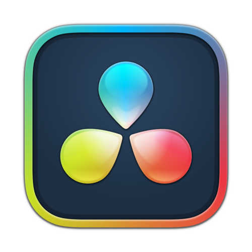
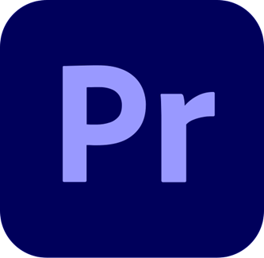
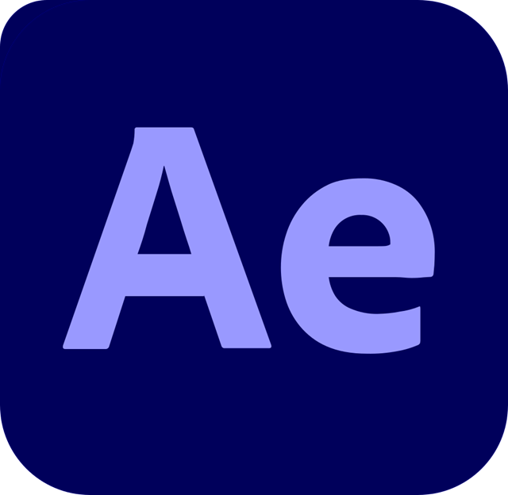
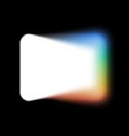

Experienced video editor / Open for projects
I shape moments
people feel.
I’m Tristan—an experienced video editor turning raw footage into focused, cinematic work with rhythm, emotion, and purpose. Work that earns attention, carries a message, and stays after the screen goes dark.





Tools in orbit
Emotion at the center
REC • 24 FPS
Selected work / motion with meaning
Made to be seen.
Shaped to be felt.
Every project begins by finding the heartbeat in the footage. From long-form films to fast-moving social work, I build pace, clarity, and emotional momentum—so viewers lean in and remember what they felt.
Short-form work / public + unlisted
Fast ideas.
Real impact.
Short-form work built to earn the first second, reward the next, and leave more than a passing impression.
About Tristan / experienced editor
Instinct first.
Purpose always.
The strongest edit feels inevitable: every look, beat, and breath arrives exactly when it should.
Experience has taught me to listen for what footage wants to become. I bring structure to raw material, shape performances with care, and carry each piece through sound, color, and final delivery—always in service of the audience and the message.
Story & structure
Turning scattered footage into a clear narrative with tension, flow, and an emotional destination.
Rhythm, sound & finish
Balancing pace, music, sound, color, and detail until every moment feels precise and complete.
Social & campaigns
Building platform-ready content that earns attention quickly without losing personality or heart.
Let’s create something memorable
Bring the vision.
I’ll give it a pulse.
Tell me what you want people to understand, remember, or feel. Together, we’ll shape the brief and footage into a finished piece worth watching to the end.
Start a conversation →